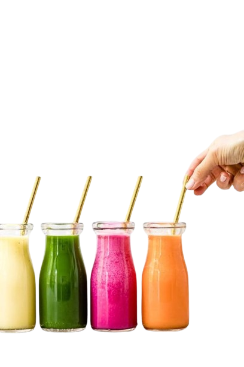

Healthy Juice Concentrates for All Kids to Enjoy
We provide a variety of flavors that all kids can enjoy! All the juice concentrates that we sell are compliant with the USDA and FDA guidelines. You don't need to refrigerate the concentrates before or after opening them.